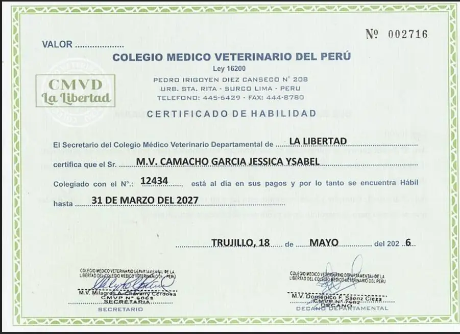
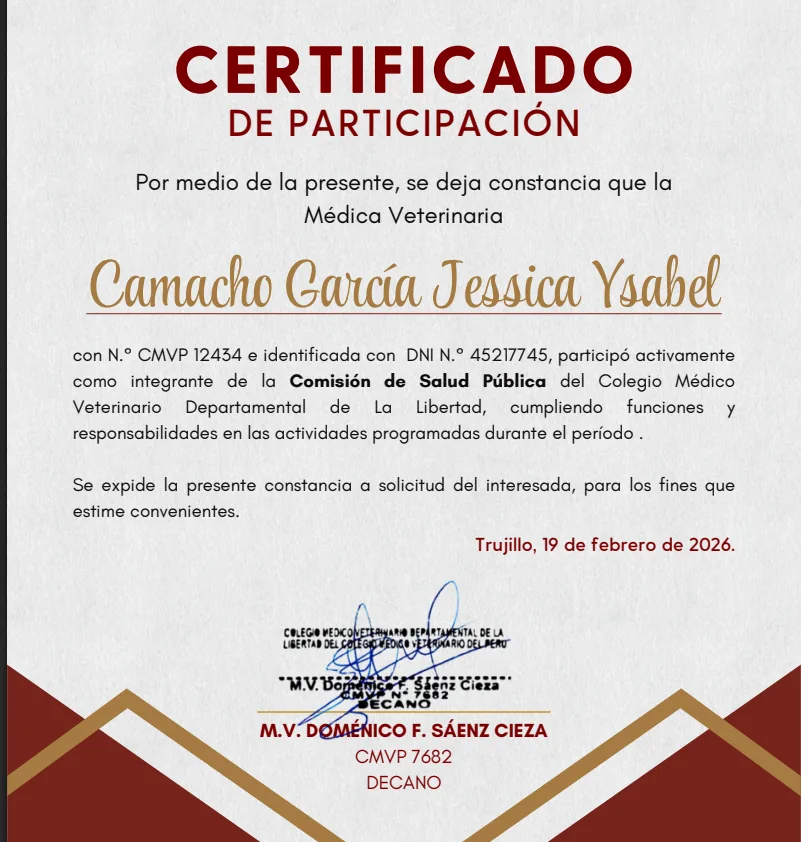
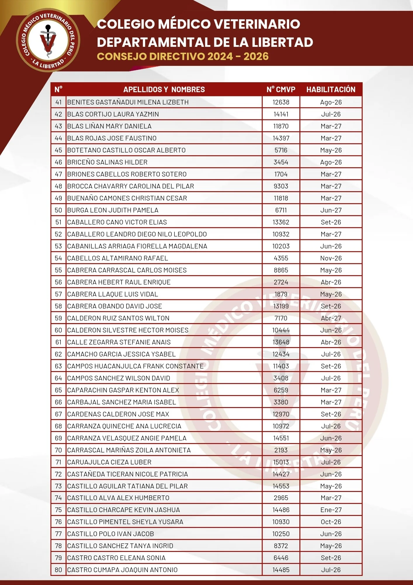
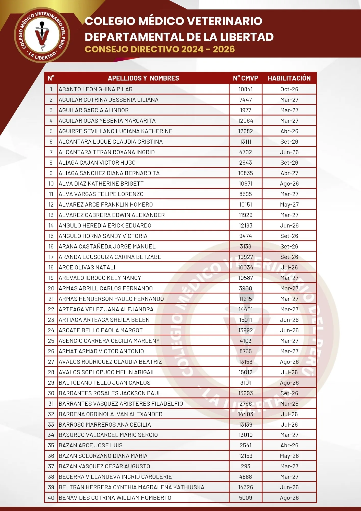

Registros en línea
Verificación institucional independiente
Cada uno de los siguientes registros es de acceso público y puede ser consultado directamente en la fuente. Ninguno requiere intermediarios para su verificación.
ORCID
ORCID iD
0009-0002-6837-5311
Identificador científico internacional. Vincula sus publicaciones con su identidad de investigadora.
Verificado
CTI
CTI Vitae · CONCYTEC
ID 0140858
Registro oficial del Estado peruano para investigadores. Directorio Nacional de Investigadores.
Verificado
FAO
FAO AGRIS
AGRIS · UPAO · 2024
Sistema Internacional de Ciencias Agrícolas de la ONU. Tesis indexada por la Universidad Privada Antenor Orrego.
Verificado
Scholar
Google Scholar
K30-SEIAAAAJ
Perfil académico verificado con email institucional @zoovettravel.com. Publicaciones indexadas.
Verificado
RG
ResearchGate
Jessica-Camacho-Garcia-3
Perfil de investigadora activa. Lead Veterinarian & Principal Investigator — Zoovet Travel.
Verificado
UPAO
Repositorio UPAO
hdl:20.500.12759/12474
Título profesional de Médico Veterinaria y Zootecnista. Universidad Privada Antenor Orrego, Trujillo.
Verificado
Documentación institucional
Registros físicos emitidos por el CMVP
Documentos oficiales emitidos por el Colegio Médico Veterinario del Perú y su delegación departamental de La Libertad.

Colegio Médico Veterinario del Perú — Nacional
Certificado de Habilidad — Vigente hasta marzo 2027

Colegio Médico Veterinario del Perú
Certificado de Participación — Comisión de Salud Pública

Padrón Oficial · CMVD La Libertad
Directorio de Colegiados — Consejo Directivo 2024–2026

Padrón Oficial · CMVD La Libertad — Página 1
Directorio de Colegiados — Registro completo
"La validez de una trayectoria profesional no depende de quién la narra,
sino de quién la registra."
Para consultas sobre los registros aquí referenciados:
contacto@zoovettravel.com
·
Volver al perfil profesional